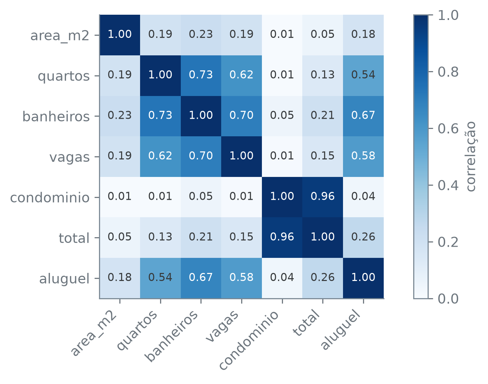

alugueis = pd.read_csv("dados/alugueis.csv", na_values=["-"])
alugueis["andar"] = alugueis["andar"].fillna(0)
alugueis.shape(10692, 13)A seção anterior fechou alugueis com mais colunas do que abriu — cidade ganhou estado e população, e o aluguel ganhou uma versão por metro quadrado, sem que nenhum merge multiplicasse uma linha sequer. Nenhuma dessas colunas resolve a pergunta que fecha o capítulo, porque a pergunta não pede mais colunas: pede uma resposta. “Quanto deveria custar o aluguel deste imóvel?” é o que decide, de toda a tabela, o que vira o que um modelo tenta prever e o que vira o que ele recebe para prever.
Como cada .qmd roda no seu próprio kernel, esta seção lê dados/alugueis.csv de novo e leva adiante só as duas decisões tomadas antes e que ficam: "-" vira nulo em andar (seção 6.3), e esse nulo vira 0 (seção 6.4). As colunas que os dois merge da seção 6.5 acrescentaram não entram nesta escolha — nenhuma pergunta abaixo depende de estado ou de população.
(10692, 13)O que a pergunta pede é aluguel: essa coluna sai da tabela e vira y, o alvo. O resto — o que se sabe do imóvel antes de saber o aluguel — vira X, os preditores. Por ora, só os numéricos que já chegam prontos: área, quartos, banheiros, vagas.
A seção 6.2 já mostrou que colchete simples devolve uma Series e colchete duplo devolve um DataFrame. É a mesma sintaxe que separa y de X aqui — só que agora X tem quatro colunas, não uma:
<class 'pandas.core.series.Series'>
<class 'pandas.core.frame.DataFrame'>y é uma Series de formato (10692,); X é um DataFrame de formato (10692, 4). Cada linha das duas tabelas ainda descreve o mesmo imóvel — é essa correspondência linha a linha que faz X e y andarem juntos daqui em diante.
andar, resolvido nas seções 6.3 e 6.4, fica fora desta primeira versão de X: o 0 do fillna representa “sem andar” (uma casa), não “andar térreo” de um apartamento, e tratar os dois como o mesmo número é uma escolha de modelagem que esta seção não chega a examinar. aceita_animal e mobiliado ficam fora pelo mesmo motivo que cidade ficaria se não fosse traduzida a seguir: ainda são texto — “sim” ou “não” —, não número.
cidade é o que a seção 6.1 chamaria de categórico nominal: cinco rótulos, sem ordem nenhuma entre eles. Um modelo, porém, só sabe multiplicar e somar número — e a tradução mais óbvia de texto para número, trocar cada cidade por um inteiro (São Paulo = 1, Rio de Janeiro = 2, Campinas = 3, e assim por diante), inventaria exatamente o que cidade não tem: uma ordem entre as cinco, e uma distância entre elas — o modelo passaria a “ler” que Campinas está duas vezes mais longe de São Paulo do que o Rio está, uma afirmação sem sentido nenhum sobre nomes de cidade.
pd.get_dummies evita essa invenção: em vez de uma coluna com números inventados, cria uma coluna por categoria, cada uma com 0 ou 1.
| Belo Horizonte | Campinas | Porto Alegre | Rio de Janeiro | São Paulo | |
|---|---|---|---|---|---|
| 0 | False | False | False | False | True |
| 1 | False | False | False | False | True |
| 2 | False | False | True | False | False |
['Belo Horizonte', 'Campinas', 'Porto Alegre', 'Rio de Janeiro', 'São Paulo']Cinco colunas, uma por cidade, em ordem alfabética. Nenhuma delas carrega mais peso que outra — e cada linha marca exatamente uma cidade como verdadeira:
Toda linha soma 1: nenhum imóvel fica sem cidade, e nenhum marca duas ao mesmo tempo. Essas cinco colunas entram em X no lugar do texto:
X passa de quatro para nove colunas — as quatro numéricas mais as cinco 0/1 que substituem cidade, sem nenhuma ordem que a coluna original não tinha.
A tabela ainda traz total, que devia ser a soma de aluguel, condominio, iptu e seguro_incendio. Conferindo:
(np.int64(9347), 10692)Em 9.347 das 10.692 linhas, a soma bate com total exatamente. Nas outras:
(1345, np.float64(-1.0), np.float64(2.0), np.int64(-379))1.345 linhas divergem, e por pouco: a mediana da diferença é -1, o percentil 75 é 2, e o pior caso chega a -379 — a tabela não traz o que causou essas 1.345 exceções, só que a maioria bate exatamente e as demais divergem por um valor pequeno perto de zero, não por uma fração do total.
Uma coluna que é, para a imensa maioria das linhas, a soma que contém aluguel como parcela entrega a resposta a quem for prever aluguel — é essa a definição de vazamento, e é por isso que total não pode entrar em X. O instinto para confirmar um vazamento é medir a correlação entre a coluna suspeita e o alvo:
0,2645. Uma correlação fraca — para uma coluna que, na prática, contém aluguel dentro de si. Colocando total ao lado dos outros números da tabela, inclusive condominio, que compõe total do mesmo jeito:
| area_m2 | quartos | banheiros | vagas | condominio | total | aluguel | |
|---|---|---|---|---|---|---|---|
| area_m2 | 1.00 | 0.19 | 0.23 | 0.19 | 0.01 | 0.05 | 0.18 |
| quartos | 0.19 | 1.00 | 0.73 | 0.62 | 0.01 | 0.13 | 0.54 |
| banheiros | 0.23 | 0.73 | 1.00 | 0.70 | 0.05 | 0.21 | 0.67 |
| vagas | 0.19 | 0.62 | 0.70 | 1.00 | 0.01 | 0.15 | 0.58 |
| condominio | 0.01 | 0.01 | 0.05 | 0.01 | 1.00 | 0.96 | 0.04 |
| total | 0.05 | 0.13 | 0.21 | 0.15 | 0.96 | 1.00 | 0.26 |
| aluguel | 0.18 | 0.54 | 0.67 | 0.58 | 0.04 | 0.26 | 1.00 |
fig, ax = plt.subplots()
im = ax.imshow(correlacoes, cmap="Blues", vmin=0, vmax=1)
ax.set_xticks(range(len(colunas_numericas)))
ax.set_xticklabels(colunas_numericas, rotation=45, ha="right")
ax.set_yticks(range(len(colunas_numericas)))
ax.set_yticklabels(colunas_numericas)
ax.grid(False)
for i in range(len(colunas_numericas)):
for j in range(len(colunas_numericas)):
valor = correlacoes.iloc[i, j]
cor_texto = "white" if valor > 0.55 else "#373A3C"
ax.text(j, i, f"{valor:.2f}", ha="center", va="center", color=cor_texto, fontsize=8)
fig.colorbar(im, ax=ax, label="correlação")
plt.tight_layout()
plt.show()
banheiros correlaciona 0,67 com aluguel, vagas 0,58, quartos 0,54 — todas mais altas que os 0,2645 de total, e nenhuma delas tem uma fórmula que inclua aluguel. Se a regra para achar vazamento fosse “procure a coluna de correlação mais alta com o alvo”, total passaria despercebida, e banheiros chamaria a atenção por um motivo que não tem nada a ver com vazar resposta nenhuma.
O que explica os 0,2645 está na própria matriz: total correlaciona 0,96 com condominio, não com aluguel. condominio é a mesma coluna cujo outlier a seção 6.4 nomeou — as duas linhas de condomínio R$ 1.117.000 — e manteve dentro de alugueis. Removendo só essas duas linhas:
(np.int64(2), np.float64(0.706))Duas linhas, de 10.692, e a correlação entre total e aluguel sobe de 0,2645 para 0,706. Alargando o corte para o 0,1% de maior condominio — que inclui essas duas linhas mais outros imóveis de condomínio alto que a seção 6.4 não chegou a nomear:
limite = alugueis["condominio"].quantile(0.999)
sem_0_1_porcento = alugueis[alugueis["condominio"] < limite]
outros = alugueis[(alugueis["condominio"] >= limite) & ~mascara_outlier]
len(alugueis) - len(sem_0_1_porcento), len(outros), outros["condominio"].min(), outros["condominio"].max(), round(sem_0_1_porcento["total"].corr(sem_0_1_porcento["aluguel"]), 4)(11, 9, np.int64(10000), np.int64(220000), np.float64(0.793))11 imóveis ao todo — os dois já removidos mais nove outros, com condomínio entre R$ 10.000 e R$ 220.000, bem abaixo do valor duplicado —, e a correlação sobe mais uma vez, para 0,793. Nenhuma fórmula mudou nos dois cortes: excluir mais imóveis de condomínio alto desloca ainda mais a correlação entre total e aluguel.
Vazamento não é uma propriedade da correlação — é uma propriedade de como a coluna foi construída. total vaza a resposta porque a fórmula que a gera inclui aluguel como parcela em 9.347 das 10.692 linhas, e isso continua verdade com correlação de 0,2645, de 0,706 ou de 0,793, com o outlier de condominio dentro da tabela ou fora dela. Medir a correlação com o alvo é um jeito de procurar vazamento — não o único, e este caso mostra como ele pode falhar: a coluna mais perigosa da tabela nem aparece entre as mais correlacionadas com o que se quer prever.
total segue fora de X — não porque a correlação avise, mas porque a definição da coluna é o motivo, e essa definição não muda de uma linha para outra. O que fazer com vazamento além de excluir a coluna volta mais adiante no material.
X e y, prontosX chega com 10.692 linhas e nove colunas — quatro números que já vinham prontos, cinco que vieram de uma tradução de texto sem ordem inventada. y chega com as mesmas 10.692 linhas, numa coluna só: o que se quer prever. É a tabela que um modelo espera receber. O que falta agora é o que um modelo é, e como saber se ele presta.